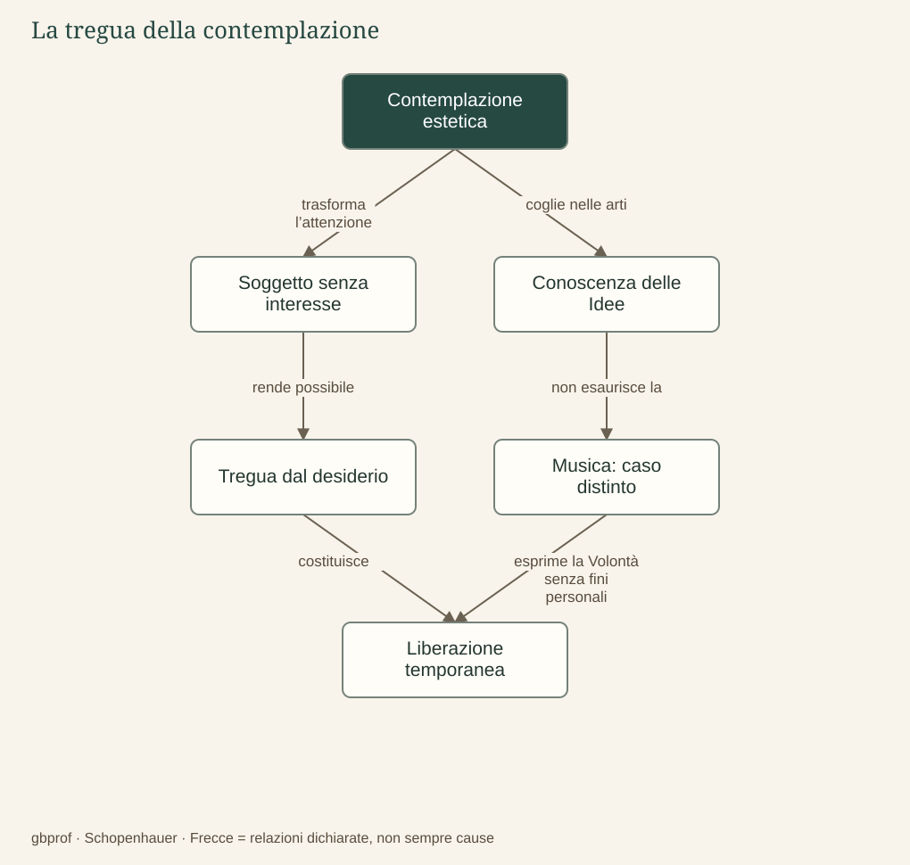

A · Comprendere Schopenhauer · 08
L’arte e la contemplazione
Possiamo smettere, almeno per un momento, di desiderare?
Normalmente guardiamo le cose a partire dai nostri interessi: un albero può essere legna, un riparo, un ostacolo o una proprietà. Nella contemplazione estetica, secondo Schopenhauer, questa relazione può interrompersi: la cosa viene guardata senza domandare subito che cosa possa offrirci. L’attenzione smette temporaneamente di servire il bisogno individuale e si concentra su ciò che appare. Non è necessario possedere l’oggetto, consumarlo o trasformarlo in un vantaggio.
Conoscere senza cercare un’utilità
L’esperienza estetica comporta una trasformazione tanto del soggetto quanto dell’oggetto. Il soggetto si sottrae, per un momento, alla propria storia di mancanze e progetti e diventa puro soggetto del conoscere; l’oggetto non viene più considerato soltanto come questo individuo particolare, in questo luogo e in questo momento. Attraverso di esso si coglie un’Idea, termine che Schopenhauer riprende da Platone per indicare un grado stabile dell’oggettivazione della Volontà.
Le Idee non sono semplicemente opinioni nella testa dell’artista, né coincidono con la cosa in sé. Conservano il rapporto fra soggetto e oggetto, ma sono sottratte alle relazioni individualizzanti dello spazio, del tempo e della causalità ordinaria. Una rappresentazione artistica può così rendere visibile una forma essenziale della vita, invece di limitarsi a documentare un episodio utile a qualcuno.
Le arti e l’eccezione della musica
Schopenhauer dispone le arti secondo i gradi di oggettivazione che esse rendono contemplabili. Nell’architettura emergono, per esempio, rapporti fra gravità e resistenza; nelle arti figurative e nella poesia si incontrano forme più complesse della natura e della vita umana. La tragedia occupa un posto elevato perché mostra il conflitto del volere con se stesso, mettendo in scena sofferenze che non dipendono soltanto dalla cattiveria eccezionale di un personaggio.
La musica ha uno statuto particolare: non è, per il filosofo, copia delle Idee come le altre arti, ma espressione immediata della Volontà. Le tensioni, gli allontanamenti e i ritorni della melodia permettono di riconoscere la dinamica del volere senza legarla a un preciso oggetto desiderato. Questa teoria non è una scoperta acustica, ma un’interpretazione metafisica del potere della musica.
Una tregua, non una liberazione definitiva
Dire che l’arte sospende la Volontà richiede una precisazione: non significa che la forza dell’intero universo smetta di operare mentre ascoltiamo una sonata. Viene sospesa la subordinazione della nostra conoscenza al volere individuale. Al termine dell’esperienza torniamo alla vita pratica, ai bisogni del corpo e alle preoccupazioni. L’arte offre pertanto una liberazione temporanea, diversa dalla trasformazione morale e dalla negazione ascetica.
Anche un’opera bella può essere consumata come oggetto di prestigio, acquisto compulsivo o prova di superiorità. Non ogni contatto con l’arte è già contemplazione disinteressata. La domanda decisiva riguarda il modo dell’attenzione: stiamo ancora cercando un vantaggio per noi, oppure riusciamo a vedere qualcosa senza ricondurlo immediatamente al nostro interesse?
Il problema in un’immagine
Dopo la lettura
Mappa di sintesi


Leggi la mappa in forma testuale
- Contemplazione estetica trasforma l’attenzione Soggetto senza interesse.
- Contemplazione estetica coglie nelle arti Conoscenza delle Idee.
- Soggetto senza interesse rende possibile Tregua dal desiderio.
- Conoscenza delle Idee non esaurisce la Musica: caso distinto.
- Tregua dal desiderio costituisce Liberazione temporanea.
- Musica: caso distinto esprime la Volontà senza fini personali Liberazione temporanea.
Fermati sul problema
Quale distinzione descrive il posto della musica?
Confronta il tuo ragionamento
Per Schopenhauer esprime direttamente la Volontà, mentre le altre arti colgono le Idee. La musica ha uno statuto metafisico speciale, ma l’esperienza estetica rimane una liberazione temporanea.